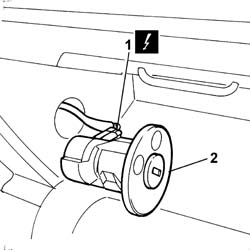

5580C26 LOCK BARREL KEY/SWITCH for deactivating passenger 'AIR BAG - R.R.
- Path
- Procedures > 55 ELECTRICAL EQUIPMENT > 5580 SPECIAL ACCESSORIES > 5580C air bag system > 5580C26 LOCK BARREL KEY/SWITCH for deactivating passenger 'AIR BAG - R.R.
- Kind
- repair procedure (removal / refitting; the operation number is the code)
- Applies to
- all engines; all production periods
- Interactive page
- https://sloeber94.github.io/elrnDB-fPnd/en/#/2753011
Applies to: all engines; all production periods
Applies to: all engines; all production periods
 Removing
Removing
 Refitting
RefittingOpen the dashboard compartment flap.
Using a suitable tool, remove the passenger Air Bag deactivation switch.
1. Disconnect the electrical connection.
 | Name | Connector |
|---|---|---|
1 | Passenger's Air Bag disablement switch | H75 |
2. Remove the switch for deactivating the passenger Air Bag.

Applies to: all engines; all production periods
Refitting
RemovingFollow these precautions:
Connect the electrical connection.
| Name | Connector |
|---|---|---|
- | Passenger's Air Bag disablement switch | H75 |
Position the passenger Air Bag deactivation switch in its seating.
Close the dashboard compartment flap.
Connect the battery terminals.
Check the operation of the system using the Examiner or another tester.
Topics that link to this page (28)
- K82 PASSENGER AIR BAG DISABLED WARNING LIGHT
- Z101 PASSENGER'S SIDE CHARGE CUT-OUT SWITCH FAILURE
- 5010D17 mixed air upper sensor - r r
- 5020A10 heater box - r+r
- 5020A30 heater fan motor - r+r
- 5020A44 heater fan motor resistor - r+r
- 5020A50 heater radiator - r+r
- 5040B64 sensor on evaporator for a/c ecu - r + r
- 5040C10 air conditioner box - r+r
- 5040C26 evaporator unit condensate collection tank - r r
- 5040C30 fan motor - r+r
- 5040C50 air conditioner heater radiator - r+r
- 5040C64 a/c evaporator - r+r
- 5040D14 ecu with automatic air conditioner pushbuttons - r+r
- 5040D75 Air conditioning recirculation flap control MOTOR - R.R.
- 5505A90 rear wiring bundle - r r or replace
- 5505C26 bonnet wiring - r r
- 5505C34 intergrated instrument under facia front air bag wiring - r r
- 5520A16 ignition key block - r+r replace with different unit
- 5580C22 AIR BAG MODULE - Passenger side - R.R.
- 7005A24 front side door r r
- 7005C18 front side door lock barrel (in handle) - replace with different version
- 7015B38 lock block - replace with different version
- 7040A10 instrument facia trim - r+r
- 7040A18 glove compartment on facia - arrange
- 7040A33 flap striker - adjust
- 7040A97 facia trim support beam - r r
- 7040L10 cabin floor carpet - r r